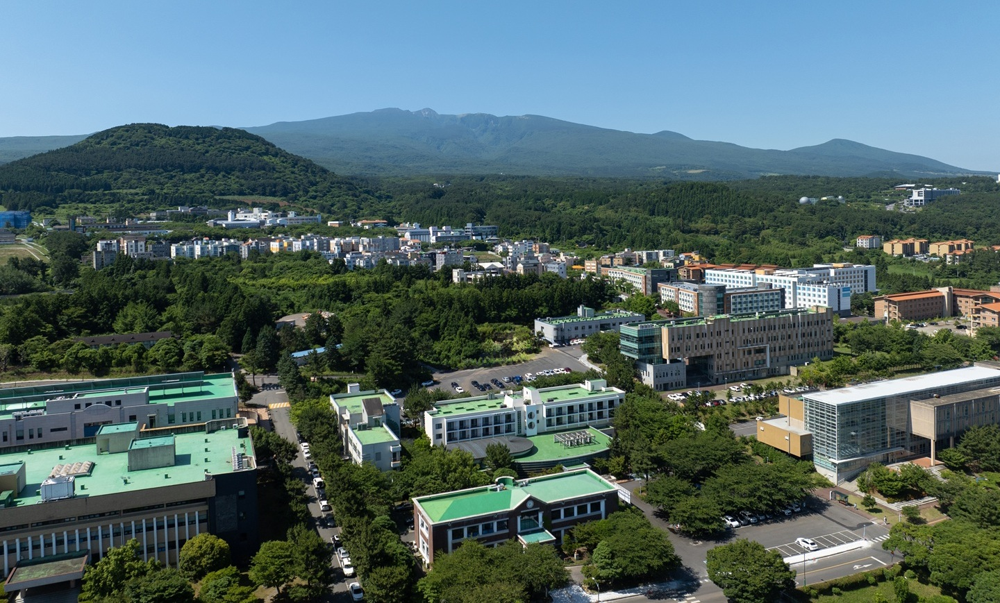
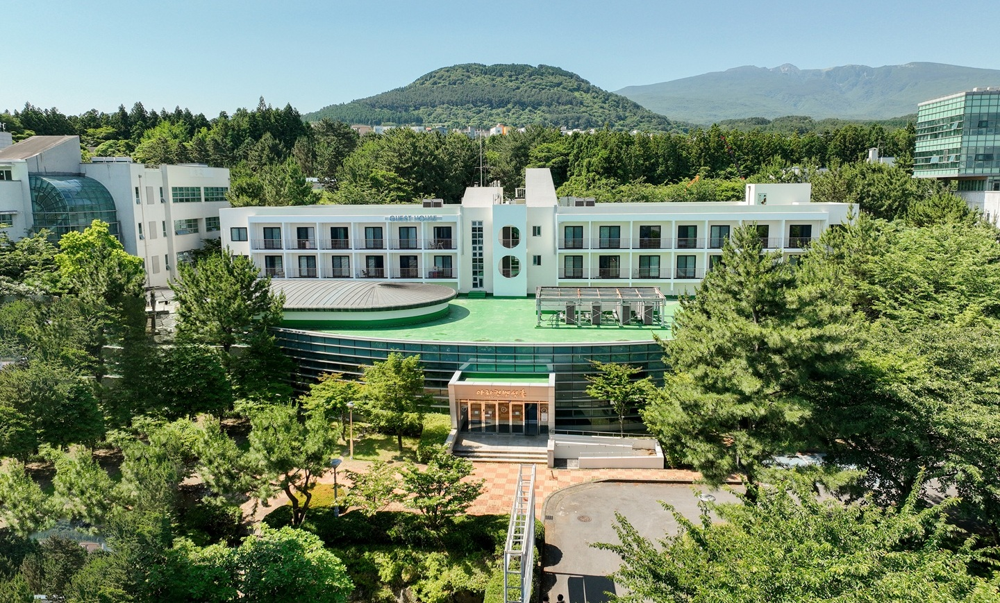
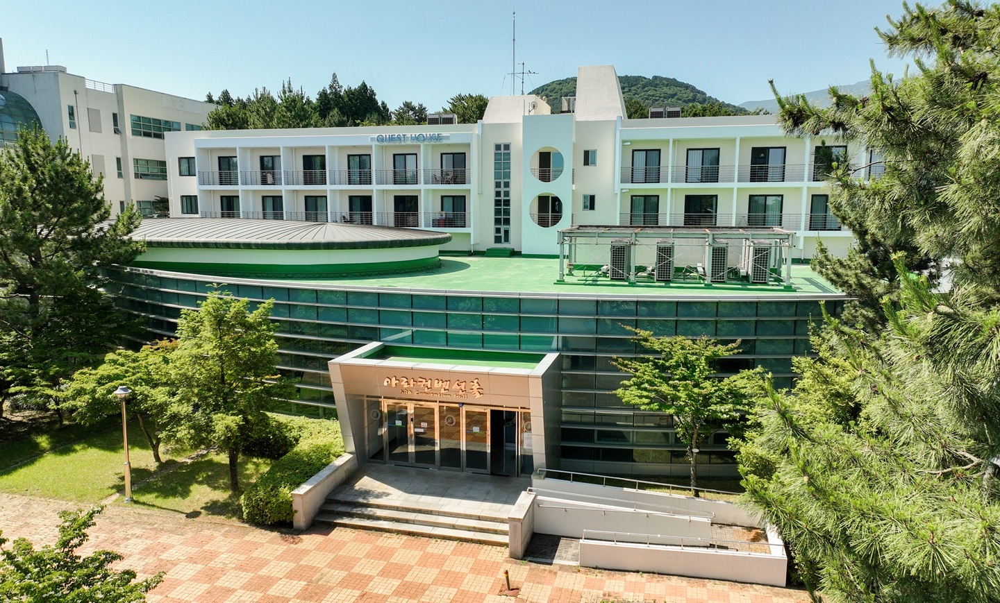
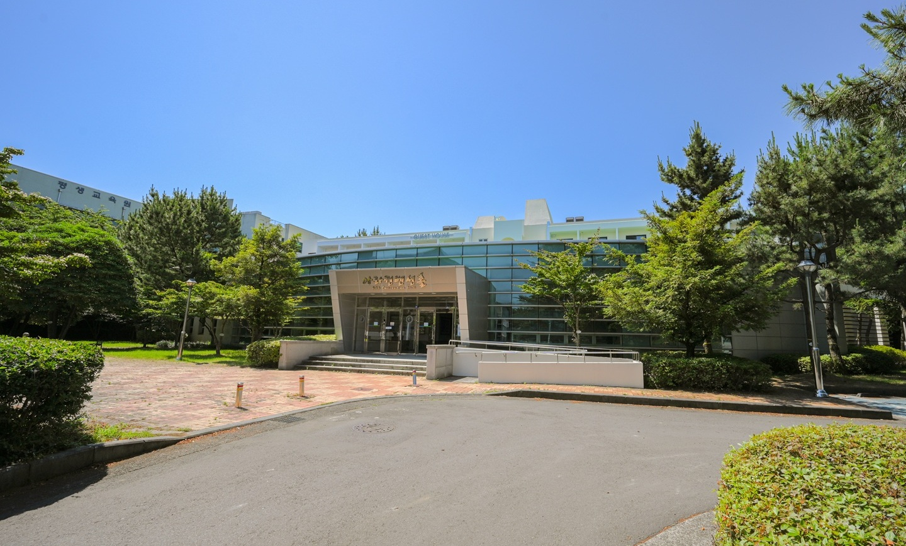
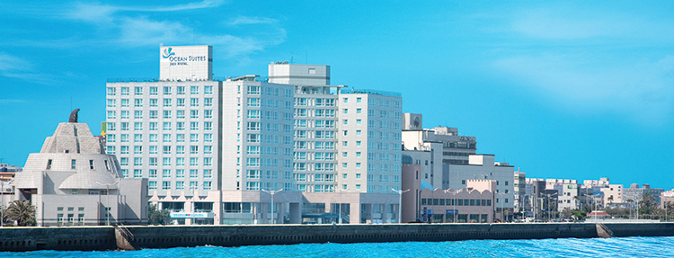
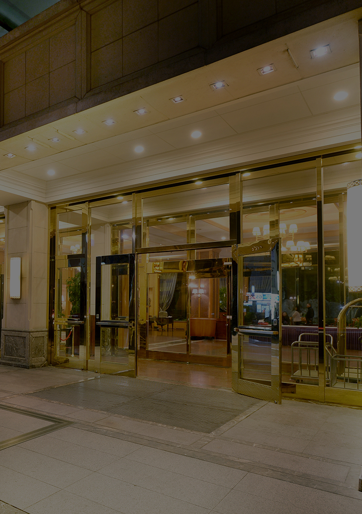
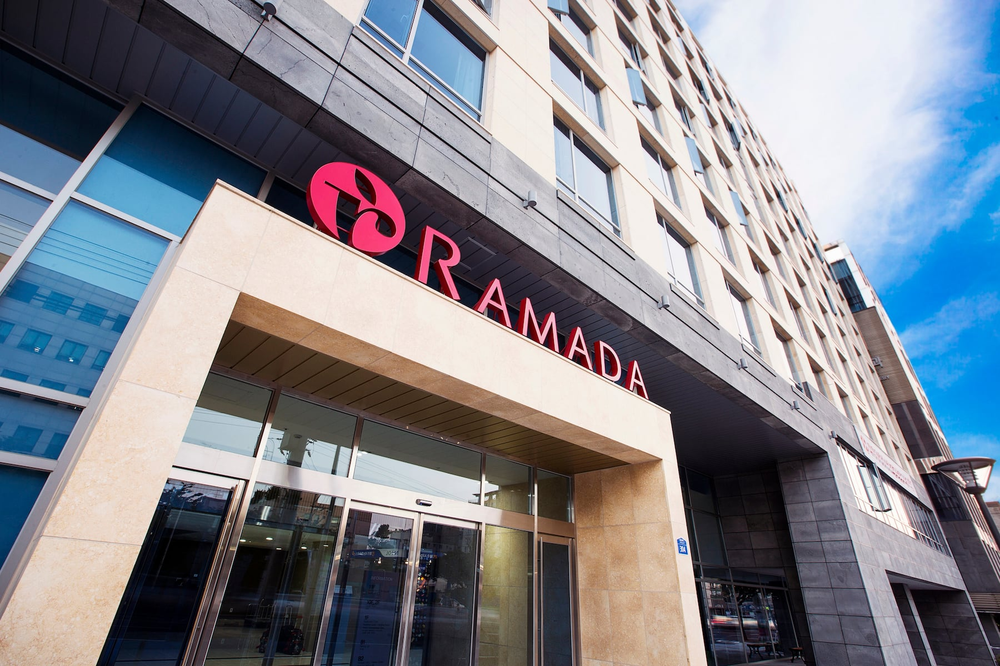
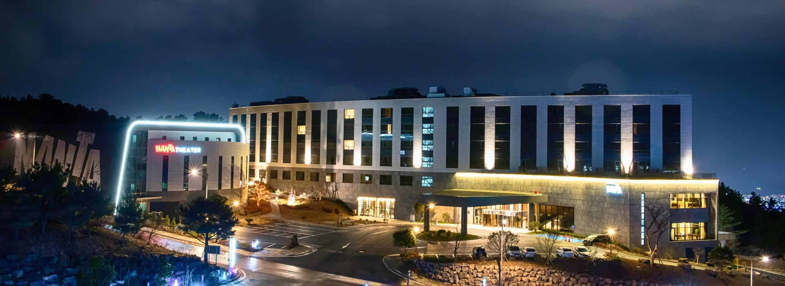

Taxi
Approximately 30 minutes from Jeju International Airport. Show the driver “제주대학교 아라컨벤션홀” or open the Google Maps destination above. Travel time may vary with traffic.
Plan your arrival and stay in Jeju
Oceanoise Asia 2026 will be held at ARA Convention Hall, located in the central area of the Jeju National University campus.




Approximately 30 minutes from Jeju International Airport. Show the driver “제주대학교 아라컨벤션홀” or open the Google Maps destination above. Travel time may vary with traffic.
Take Bus 302 (Express) or Bus 365 from Jeju International Airport and get off at Jeju National University Bus Stop. From the bus stop, allow approximately 15 minutes to walk across campus to ARA Convention Hall.
The following hotels are provided for reference only. Participants should check availability and make reservations directly with each hotel. Estimated driving times are to ARA Convention Hall and may vary with traffic.



City Hall & Courthouse Area
Approx. 20 minutes by car to the venue
Official Website
Near Jeju National University
Approx. 5 minutes by car to the venue
Official Website